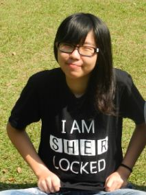

何语萱
广东省珠海市唐家湾金凤路28号 519000
(+86) 13631242680
kmokidd@gmail.com
https://github.com/kmokidd
教育背景
- 北京师范大学-香港浸会大学 联合国际学院 (BNU-HKBU United International Collage)
- 计算机科学与技术
- GPA: 3.39/4.0
语言能力
- 普通话
- 英语 (雅思 7.0)
- 少量日语，德语
- 可听懂粤语
实习经验
-
2013/06-2013/09 北京文德致远文化传播有限公司 前端实习工程师
- 负责《商业价值》杂志广告版块，2013MIIC创新大会微信墙，中国IT价值峰会周边产品，协助完成itValue社区页面重构
- 备注：开发时使用jade, SASS, jQuery, 并兼容主流浏览器
-
2013/09 - 至今 珠海云游道工作室 前端实习工程师
- 独立负责工作室的部分外包项目（包括前端页面以及基于Django的后台）
项目经验
-
2013/09 - 至今:「剪录」网站，前端工程师
- 负责完成网站前端部分，熟练运用html5 中audio 的API，并结合jQuery 实现用户与网页的交互。协助编写后台程序的同学，共同使用Django 搭建网站后台
-
2013/03 - 2013/06：词法分析器
- 对于给定的语法，用Python写出对应的词法分析器，并用C语言代码片段检验，并生成相应的Parse tree
-
2012/11 - 2012/12： FAT32文件恢复项目
- Linux环境下，使用C语言恢复被删除的FAT32文件，包括文档类的小文件以及音频图片类的大文件
-
2012/06 -2012/08：「找人」搜索引擎项目网页设计师，前端工程师
- 爬取数据以及其分词项目初期使用「火车头」爬取数据软件获得和讯网全部人物数据，编
写Java 程序将爬取的数据按照具体信息分词存入MongoDB。项目中期使用Pencil, AI 等软件进行网页设计，再使用960js, jQuery 框架等前端技术实现页面效果。人物关系使用d3js 模型将数据可视化
-
2010 -- 2012：多担任组长，前端工程师以及设计师，完成以下课程项目：
- 预定课室系统 (C#)
- NFA转换最小化DFA (Python)
- UCall: 新生通讯录 (Android)
- 3D建模: 环保垃圾桶 (OpenGL)
- 网上银行系统 (html/css/js + JSP)
- 模拟Shell (C)
- 课时查询系统 (C/C++)
- 中国象棋 (Java)
- 诗歌微博 (html/css/js + JSP)
获奖经历
校园活动
-
2012 -- 至今 北京师范大学-香港浸会大学联合国际学院理工科技学部
-
2011 -- 至今 北京师范大学-香港浸会大学联合国际学院兴趣社团TEDxUIC
-
2013/02 - 2013/09 珠海谷歌开发者社区(Zhuhai GDG)
-
2012/06 - 2012/08 北京师范大学-香港浸会大学联合国际学院技术沙龙
-
2010/09 - 2012/06 北京师范大学-香港浸会大学联合国际学院计算机专业学会